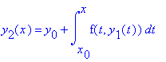

> y(x)=y[0]+int(f(t,y(t)),t=x[0]..x);
> y[2](x)=y[0]+int(f(t,y[1](t)),t=x[0]..x);

> y[n+1](x)=y[0]+int(f(t,y[n](t)),t=x[0]..x);
>
![[Maple Math]](images/theronform1.gif)
![[Maple Math]](images/theronform3.gif)